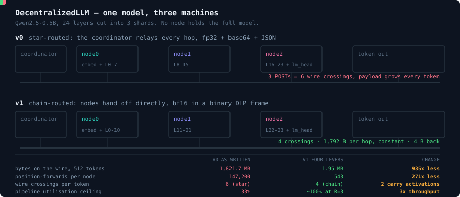

Decentralised inference
Open source models are really good now, but running one yourself is still expensive. You either buy a serious GPU, or you rent a cluster and send your prompts off to someone else's servers.

DecentralizedLLM takes one model and spreads it across whatever devices you already have. A phone, a laptop, an old desktop with a decent GPU, a spare box in the corner. Each device holds a few layers of the model instead of the whole thing. Your prompt goes to the first device, the partial result gets passed to the next over wifi or a VPN, and the last one sends back the answer. No single device ever holds the full model.
The devices don't have to match. A shard is just a range of layers, so the machine with the GPU can take more of them and the phone can take fewer. You are pooling whatever the group happens to own.
| Device | Rough shard | Worked example |
|---|---|---|
| Phone | under 1 GB | an 8B model in int4 is 4.0 GB, so 1.0 GB each across four phones |
| Laptop | a few GB | a 70B model in int4 is 35.3 GB, so 7.1 GB each across five laptops |
| Desktop with a GPU | the biggest slice | takes more layers, so it is not left idle waiting on the others |
We took the existing prototype apart and checked every number against the real model config and the
real source. Five things came out of it, all reproducible with
bench/verify_constants.py.
The even split is not even. The output head is 136M parameters, which is 9.13 transformer layers' worth of compute. So an 8/8/8 split really runs 8/8/17, and the pipeline moves at the speed of its slowest stage. That costs 1.539x, and the fix is three environment variables.
The biggest thing on the wire is the logits, not the activation. The last node ships back a 607,744 byte vector every token, because the sampling happens on the coordinator. Move the sampling one hop earlier and it becomes a 4 byte token id.
There is no KV cache, so a 512 token reply recomputes the whole sequence every step: 147,200 position forwards per node instead of 543. Grouped query attention makes the cache almost free, at 12 KB per token for the entire model.
935x fewer bytes on the wire for one 512 token generation, and that figure is deliberately conservative. See the next one.
The prototype does not chain. The node service has no outbound HTTP client at all, so the coordinator relays every hop: three POSTs, six wire crossings per token. Our own diagram described a system the code did not implement. We found it, and it is why chain routing is real work rather than something we can assume.
We ran these against the real checkpoint expecting them to work. They did not, and we would rather say so than quietly drop them.
Cosine similarity 0.039, perplexity 411,041 against a baseline of 18.6. The cause is measurable: one channel out of 896 carries 972x the median magnitude. bf16 is free and that is where we stop.
Rank 224 of 896 reproduces every next token choice exactly, but the projection costs 27.31 µs to save 11 µs of network time. It only starts paying below 394 Mbit/s. We built it, measured it, cut it.
Distributed ML is what we do day to day. We run GPU workloads on Kubernetes, and we are maintainers on Kubeflow and Feast, so getting separate machines to cooperate on one job is familiar territory. Decentralised inference is the same problem pointed at everyday devices instead of a datacenter.
We have also deployed local LLMs on device, so the memory ceilings and the latency pain are not theory for us. Open source is a big part of how we work, and between us we have been selected for GSSoC and LFX Mentorship.
The part we actually care about is who this serves. Most of the world runs on mid range hardware and patchy networks, and cloud LLMs quietly skip those users. Decentralised inference is one of the few approaches that gets better as devices get more numerous rather than more powerful.